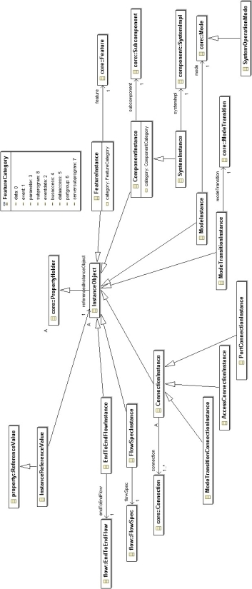

Previous
Next
Previous
Next 
| 5. AADL Instance Model |
The Instance meta model package defines the representation
of an AADL instance model. The
instance representation has been designed with several objectives:
- The ability to generate instance models from the declarative AADL model with a system implementation as the instance root.
- The ability to process an instance model without necessarily loading the complete declarative model. In other words, caching of property values that are relevant to a particular analysis or generation process in the instance model.
- The ability to represent a modal AADL instance model without necessarily creating a separate instance model for each mode combination, i.e., for each system operation mode as defined in section 11.
- The ability for tools that operate on the instance model to attach their results as properties of the instance model and have the property values be specific to each system operation mode.
The meta model for the AADL instance model is shown in
the next three figures. Figure 35 shows
the class hierarchy of instance model object classes. Figure 36 illustrates the relationships
between AADL instance model objects. Figure 37 specifies classes that permit AADL instance
model configuration information to be separately maintained.
The InstanceObject class is the common super class.
It is defined as a subclass of
PropertyHolder, i.e., all instance objects can contain property associations.
Different subclasses of InstanceObject have references
to their respective classes in the
declarative model (see Figure 35). For example, a ComponentInstance object refers to the
subcomponent it is instantiated from. Instance objects other than ConnectionInstance objects
refer to a single counterpart in the declarative model. A ConnectionInstance object refers
to the
collection of connection declarations that make up the connection instance. In addition, the
ConnectionInstance object refers to the collection of ComponentInstance objects that provide
the
context of each of the connection declaration. The context of a connection declaration is the
ComponentInstance object whose component implementation contains the connection declaration.
This context is useful for modal processing of instance models.
The ComponentInstance class represents instances
of subcomponents from the declarative AADL
model. The subcomponent name is stored in the name attribute of the ComponentInstance and
the category is recorded in the category attribute. The category attribute permits the
component
category to be determined without accessing the subcomponent in the declarative AADL model.
The reference association to the subcomponent is a cross XML document reference, given that
instance models and packages of AADL specifications are stored persistently in separate XML
documents. Lazy loading of XML documents permits analysis and generation tools to operate on
instance models without causing the declarative model to be loaded.
ComponentInstance objects are used to represent
the full component instance hierarchy of a
system. For example, a system instance model may consist of a SystemInstance object that
contains a ComponentInstance for an application system and a ComponentInstance for a
execution platform system. The application component instance contains ComponentInstance
objects representing processes, which in turn contain ComponentInstance objects representing
threads in those processes. Similarly, the execution platform component instance contains
ComponentInstance objects representing processors, buses, memory, and devices.

Figure 35 The AADL Instance Model Class Hierarchy
The definition of the ComponentInstance class
in the AADL meta model permits a flattened
instance model to be represented that is populated with only the leaf nodes of the instance
hierarchy. This may be desirable if the intermediate components are not relevant for processing
the instance model. In the example above, the instance model would consist of a SystemInstance
object that contains ComponentInstance objects for all the threads, processors, buses, memory,
and devices, but no intermediate components.
The SystemInstance class represents the instance
root object that is the result of instantiating a
system implementation. The SystemInstance has the constraint that it does not have a reference
association to Subcomponent although it is a subclass of ComponentInstance. This
reflects the
fact that a SystemInstance is instantiated from a system implementation instead of a
subcomponent.
Modal component instances, i.e., component instances
whose subcomponent classifiers have
mode declarations, contain objects of the ModeInstance class. Component instances also
contain
objects of the FeatureInstance class. The FeatureInstance class has a containment
association
to itself to support the representation of nested features in port groups. The feature name is stored
in the name attribute of the FeatureInstance and the feature category is recorded in the category
attribute.
The abstract ConnectionInstance class and its
subclasses represent semantic connections.
PortConnectionInstance objects represent semantic connections between ports and port groups.
If
the ultimate source or ultimate desintation of the semantic connection is a port group, then the
semantic connection is unfolded into separate semantic connections for each of the event, data,
and event data ports contained in the port group. ModeTransitionConnectionInstance objects
represent semantic connections from event ports as ultimate sources to mode transitions.
AccessConnectionInstance objects represent a semantic connection from the data or bus
component to being accessed to a thread, device, memory, or processor requiring access to data
or a bus.
It may be desirable to instantiate incomplete system
models, i.e., system models where the
application is not yet elaborated down to the thread level. For example, it may be desirable to
perform flow related latency analysis on partitioned systems without the details of partition
implementations. In this case, the component hierarchy is instantiated for subcomponents with
classifiers and ConnectionInstance objects may be created between the leaf nodes of this
incomplete system hierarchy. In this case, a ConnectionInstance object may not have a thread,
processor, or device as its ultimate source or destination, thus, does not represent a semantic
connection as defined in Section 9 of the AADL standard.
Flows are represented in AADL instance models as follows.
The FlowSpecInstance class
represents flow specifications associated with a component instance. The EndToEndFlowInstance
class represents an end-to-end flow specification in the AADL instance model. They consist of
a
sequence of FlowElementInstance objects that alternate between a reference to a
FlowSpecInstance object and a PortConnectionInstance object. EndToEndFlowInstance
objects
are contained in the component instance, whose component implementation contains the end-to-
end flow declaration.

Figure 36 The AADL Instance Model Relationships
The paths declared by reference values of properties
are expressed relative to the component for
which the property association is declared. However, through the contained property association
declaration the property value is actually associated with a component within the hierarchy below
the component with the declaration. When property values are cached in the instance model they
are attached to the instance object for which they are declared. Since all InstanceObject
objects
are property holders, the property association representation from the declarative AADL model can
be used, except that the reference values have to be translated into references within the instance
model. This is done through the InstanceReferenceValue class.
When property values are cached from the declarative
model in the instance model, the property
association has its derived attribute set to true. The property value of the property association
is
the value retrieved from the declarative model. A copy of the cached property value is attached
to
each instance object for which the property value holds. In other words, in the instance model
the
property value is found with the instance object and does not have to be searched for according to
the rules for determining a property value as defined for property associations in the SAE AADL
standard.
The SystemOperationMode class represents a system
operation mode, i.e., a set of current modes
of all active modal component instances. It is expressed as a multiplicity reference association
to
the relevant ModeInstance objects of modal component instances.
All valid system operation modes can be generated and
attached to the system instance through a
containment association. This allows analysis tools to iterate over the system operation modes
to
analyze the modal instance model.
Several InstanceObject classes represent model
objects that are active in certain modes as
expressed by the in modes clause. ComponentInstance objects are active in modes
defined by
the containing component instance. This is represented by the reference association inModes
between ComponentInstance and ModeInstance. ConnectionInstance objects are
active in
combinations of modes of components whose connection declarations make up the connection
instance. This mode combination is represented by SystemOperationMode objects. A
reference
association inSystemOperationModes between the ConnectionInstance and SystemOperationMode
records this reference. EndToEndFlowInstance objects are active in modes defined by
the
containing component instance, which is recorded by an inModes reference association between
EndToEndFlowInstance and ModeInstance. The system operation modes an end-to-end
flow
instance applies to is determined by these modes and the system operation modes that apply to
each of its flow element instances. That set can be pre-calculated and recorded through the
inSystemOperationModes reference association between EndToEndFlowInstance and
SystemOperationMode.

Figure 37 System Instance Configurations
A SystemInstanceConfiguration class has been defined
to compactly represent different modal
system configurations as a combination of a SystemOperationMode objects and property
associations specific to those system operation modes. The property associations are contained
property associations that apply to specific objects in the AADL instance model. This allows
analysis tools to record their results in a more compact persistent form and can then be mapped
onto the instance model. Multiple sets of of property values can be mapped to the same instance
model.